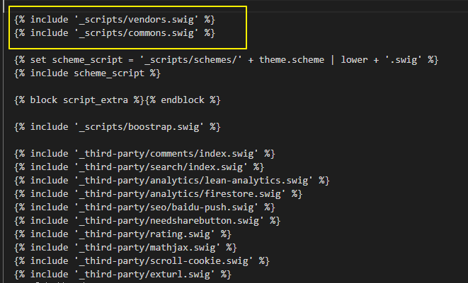

hexo博客再折腾
在访问其他人的博客的时候，发现这样一个好玩的效果，鼠标点击，周围泛起一圈气泡。于是，想到了能不能在自己的博客中也添加一下。最后，效果实现了，不过没有自动动手写出来，而是直接引入了其他人写好的文件。不过这样一个发现的过程，还是挺有意思的。
PS: 这博客可真漂亮呀!!!
发现
访问https://chanshiyu.com/发现这样的效果，觉得挺有趣的。
打开控制台，点击network，重新刷新页面，把目标锁定到了一个名为anime.min.js的文件，很明显，即使它不是要找的文件，也应该与这个效果有关。
使用google搜索anime.js，访问其主页，发现也是这样一个冒泡的动画效果，看来没找错地方。
打开控制台，分别在Element 和 network进行定位。看来fireworks.js就是要寻找的文件了，它依赖于anime.js。
嵌入hexo中
想法，只需要在对应的位置，进行js文件的引用，就可以达到目标。
google搜索 hexo引入自定义js
第一条结果，大致意思，就是在/themes/<theme_name>/source下有 js css等静态文件的存放文件夹。
第二条结果，大致意思，就是可以在themes/<theme_name>/source/layout下进行全局静态文件的引用。
虽然会有主题上的差异，但情况差不多。当前自己使用的主题是next， 打开themes/next/source/_layout.swig 。浏览文件，有这样一段代码，它应该标志着在_themes/next/source/_scripts中引用js文件。

打开_themes/<theme_name>/source/_scripts/commons.swig ，猜测大概意思，就是从/themes/<theme_name>/source/js/src/中引入对应的文件。
所以为了统一管理，最好的办法就是依葫芦画瓢，分别在对应的位置进行设置。 因为_layout.swig被其他页面引用，所以在这里设置，就相当于同时在其他页面中引入。
步骤
- 在
/themes/next/layout/_layout.swig中，手动注入。
在
/themes/next/layout/_scripts/中，手动添加文件。在
D:\blog\themes\next\source\js\src中，手动添加文件。对应的文件代码
// anime.min.js 把之前找到的文件复制下来即可。 // anime_oneAnime.js 就是 fireworks.js 中的内容 不过手动生成了canvas节点，并设置对应的属性// yiyan.js // 接入一言api， ;(function() { var pathName = window.location.pathname // 正则匹配， 如果成功就发送请求。 var path = ['/', '/categories/.*'] var re = path.map((item) => RegExp(item)) if (re.some(item => item.test(pathName))) { var xhr = new XMLHttpRequest(); xhr.open('get', 'https://v1.hitokoto.cn/?c=a' ); xhr.timeout = 2000; // 超时时间，单位是毫秒 xhr.onreadystatechange = function () { if (xhr.readyState === 4) { success(JSON.parse(xhr.responseText)) } } xhr.ontimeout = function (e) {error()}; xhr.onerror = function(e) {error()} xhr.send(); } function success(data) { // 数据处理，在对应节点展示 } function error() { // 错误处理 } } )();最后本地预览，调整，完成后，部署到远程仓库